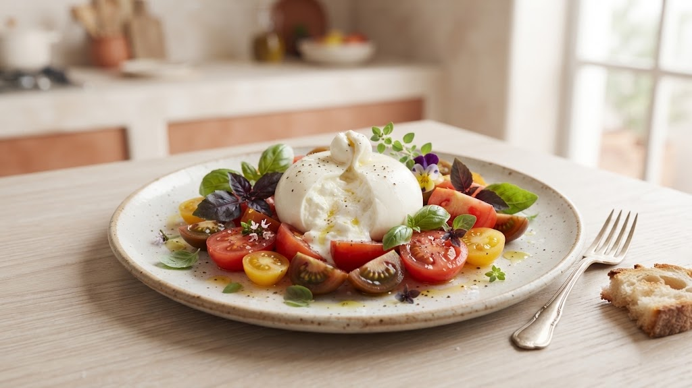
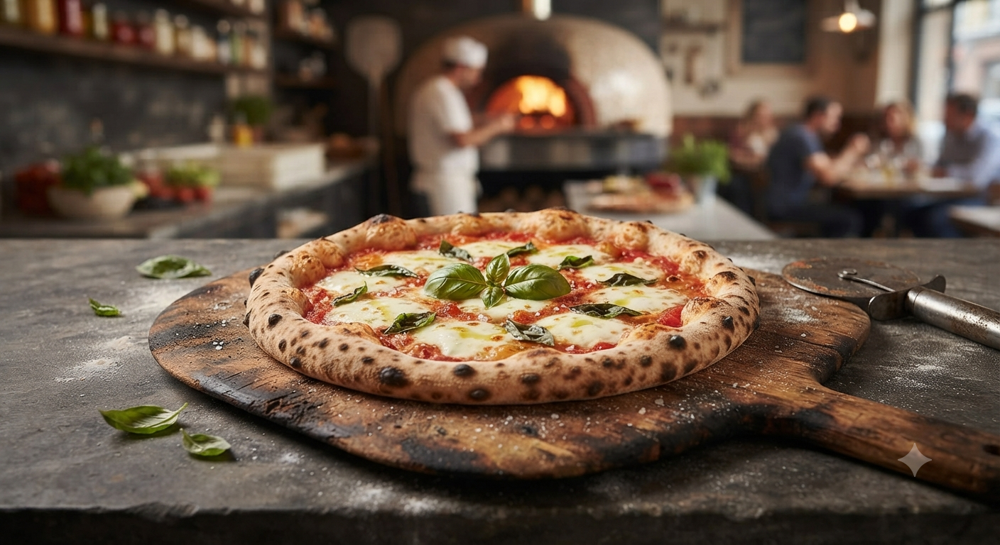
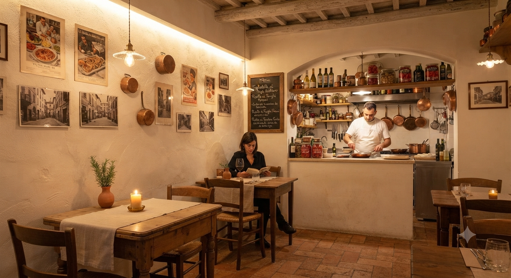

01
常時10種以上の
常時10種以上の
ナチュラルワイン
自然に寄り添って造られたワインを厳選。店主自らテイスティングし、その日の料理に最適な一本を提案します。
限定
「ブッラータのカプレーゼ」
クーポン配布中
Signature Dish

極上のとろ〜り感
イタリア語で「バターのような」という意味を持つブッラータ。巾着状のチーズを割れば、中から濃厚なクリームが溢れ出します。
コネクトでは、この至極のチーズを地元・岩手県産小麦の自家製パンや、季節の新鮮な食材と共に提供。濃いめの味付けが、ナチュラルワインの繊細な風味を一層引き立てます。
ワインとの相性
鮮度のこだわり
産地直送フレッシュ
Our Pride
自然に寄り添って造られたワインを厳選。店主自らテイスティングし、その日の料理に最適な一本を提案します。

石窯で焼くピッツァやパスタには岩手県産小麦を使用。地元の滋味溢れる食材を、お酒に合う最高の味付けで。

店内に溢れる植物と、窓の外に広がる景観。日常を忘れさせてくれる、身の丈に合った心地よい場所。
「口頭だけじゃもったいない！」お客様の声から生まれた新しい取り組み
「どのワインがこの料理に合うの？」というお悩みを解決するため、メニューブックやテーブルの特製ポップに〈料理と相性抜群のワインの組み合わせ理由〉を視覚的にわかりやすく記載します。
Pairing Guide Example
相性の秘密
チーズの濃厚なミルキーさと、オレンジワイン特有の心地よい苦み（タンニン）が抜群の相性！お互いの旨味を引き立て合います。
ディナータイム限定特典
1分で完了・登録は無料です
※ボタンをタップするとLINEアプリが自動で起動します